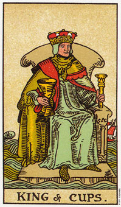

圣杯(侍卫)意味有益于情感的奉献。
圣杯(侍卫)代表水元素当中空气的部分：透过思考、梦想或冥想等方式来接近情感。“思索情感”是描述这个侍卫的简单方式。
圣杯(侍卫)暗示已经赋予你的一段两性关系或伙伴关系。包括生意上的合作关系，也可以指别人提供你的一次机会。
塔罗牌中的侍卫牌都和学习有关，而且由于圣杯组牌涉及情感和直觉，所以这张牌可能意味着透过冥想，或其他任何类似的被动方式来进行心灵上的学习或发展。
这张牌和女教皇一起出现代表双鱼座，和圣杯其他的宫廷牌一起出现也多有这种意义。
侍卫牌可象征新消息，不论是透过信件、电话，或倾听你内心的声音并留意其传送的讯息。这张牌如果用来形容一个人，则是一个二十二岁以下，有着安静温柔性情、喜欢沉思胜过行动的人。如果是在形容一个孩子，那么所意味的便是一个喜欢思考，而有创造力的人。
大体上的意义
圣杯十位代表一段新关系或圣以合伙关系的到来。一个让情感得到满足的机会;也就是说，这样的生意合作包含了你所喜爱的工作，或有创意的工作。
当出现在女教皇旁边时，圣杯(侍卫)可指你周遭有一位双鱼性格的人，或者如果你本身就是双鱼座，那就是指你自己。如果圣杯(侍卫)出现在教皇旁边，而你周遭又没有双鱼座的人，那就很可能使指心灵或精神上的发展了。
两性关系上的意义
在两性关系分析上，圣杯(侍卫)可能意味着出现一段新关系，或既存关系进入了新阶段的机会。在分开之后，这张牌可能暗示复合，因为它描绘的是有人要献给你有价值的东西。在有关于朋友或伴侣的复合问题上，这张牌给了你一个正面的提示：那将会发生。
倒立的圣杯(侍卫)
圣杯(侍卫)倒立意味对某个伙伴关系或两性关系的失望，或是指合伙关系的解散。因为侍卫代表新消息，那么倒立的侍卫可能是暗示令人失望的消息，或是一段迟来的消息。有时候它是在形容你无法脚踏实地，或与目前的环境结合，知道你接受了在下个步骤中所需要的资讯或消息。它也可以指你还不了解自己的处境，却急需下决定的一段时间。例如，在你辞去目前的工作之前，可能正等着确定下一个工作机会。这个侍卫意味着此一机会的不确定，或这个机会的确认来迟了。
侍卫也可代表你的想象阻碍到你的思考或内性的一段时间。它也可形容一种矛盾或没有道理的供应。或许是提供您某些东西的人，没有立场给你东西，或是负责这项供应的人，对此事并不确定。
圣杯十侍卫倒立可形容因为想要脚踏实地，稳定情势，结果日思夜梦对精神所造成的干扰。例常性的散步、莳花捻草、充沛的运动，或是多于大自然为伍均可帮助你返回精神上的稳定状态。假设重大的精神发展，没有建立在适当的基础上，你可能就得冒着情绪和精神不稳定的危险。一棵昂扬屹立的大树必须要深深的向下扎根，那么在第一次强风来袭时才能停止不摇。